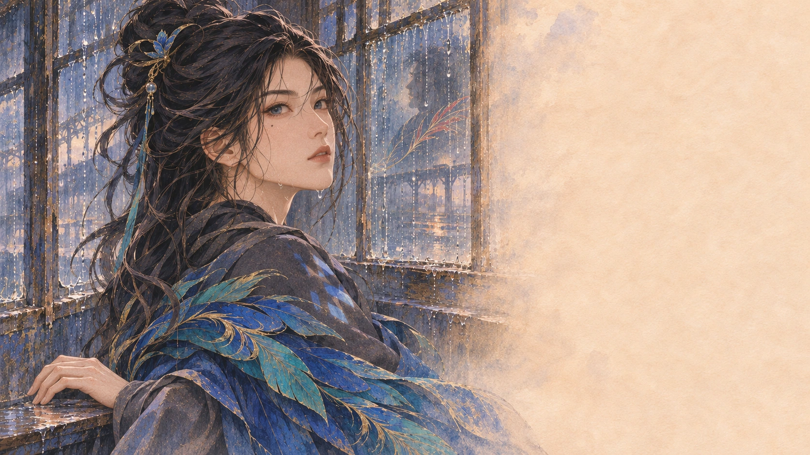
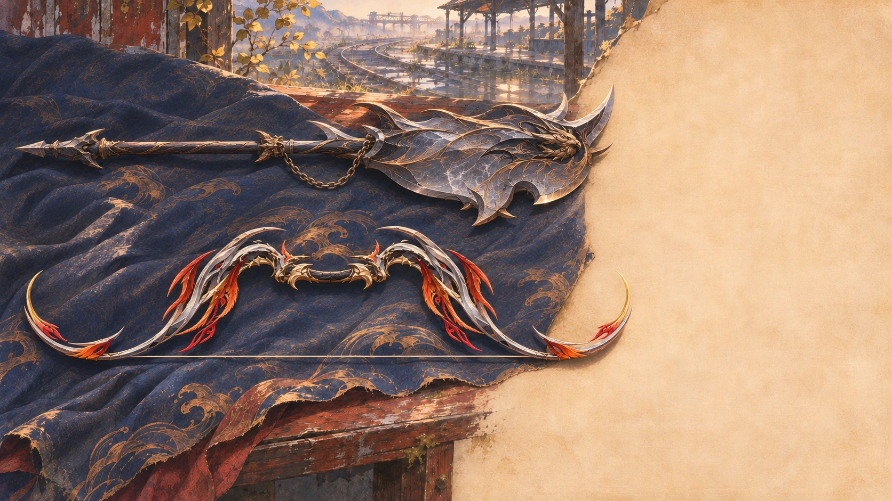
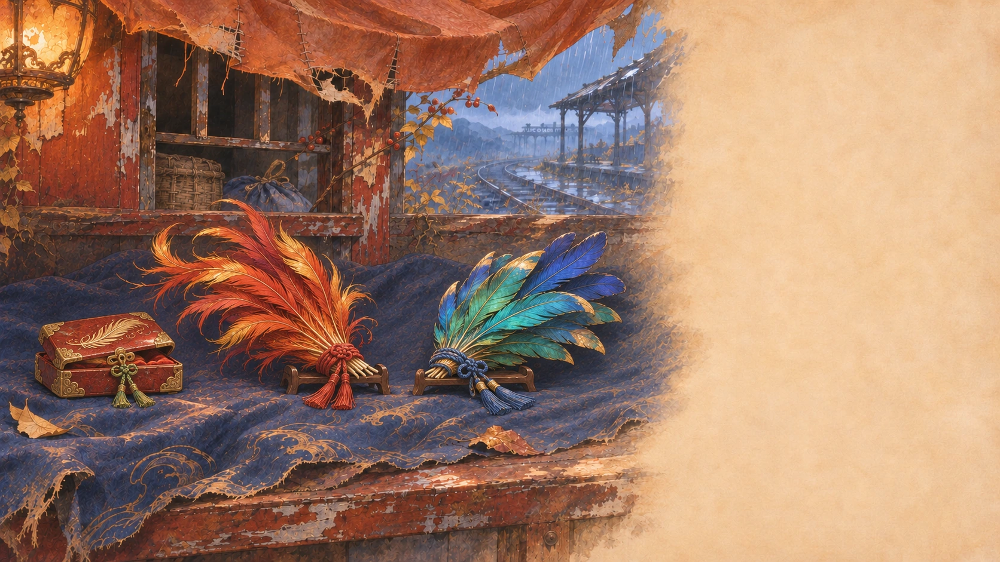

灰鸦
栖在废站的电线上，爱啄发亮的东西。
交手记待鸦群聚拢，一锤可击飞数只。
选择出击或按左方向键打开灰原关卡图。人格题签可查看兄妹，武库题签可装配武器。图录中点鸟身或题签查看近景。在补给摊选货、调整份数并购买。按 Tab 键移动焦点，按右方向键或 Escape 返回上一层。向右拖动也可展开画卷。

目标击败全部敌人


E范围击飞
Tab联动妹妹三枪
锤 E 击飞原目标后可用


伏浪锚
E · 范围击飞
引冰落
Q · 单发引冰落
锤 E 击飞原目标后可用
当前装配 锤·铳

栖在废站的电线上，爱啄发亮的东西。
交手记待鸦群聚拢，一锤可击飞数只。


交手记

